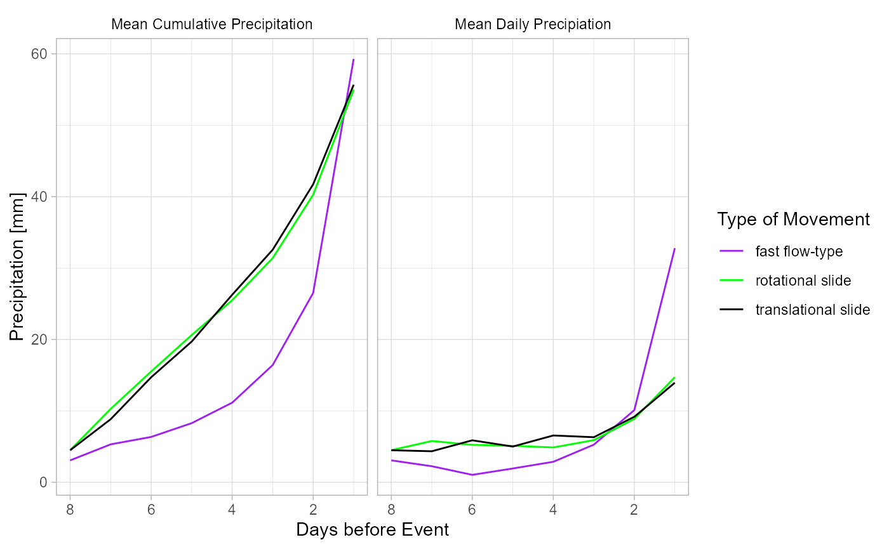
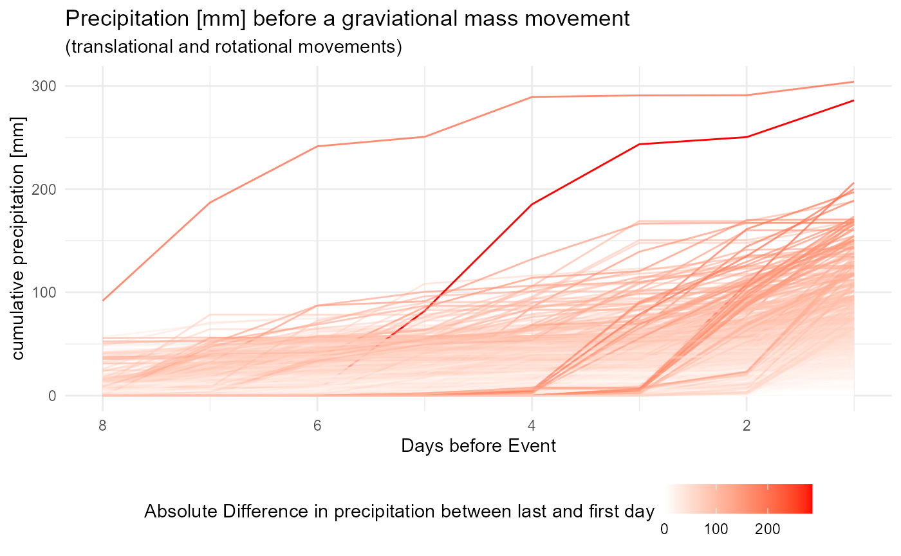
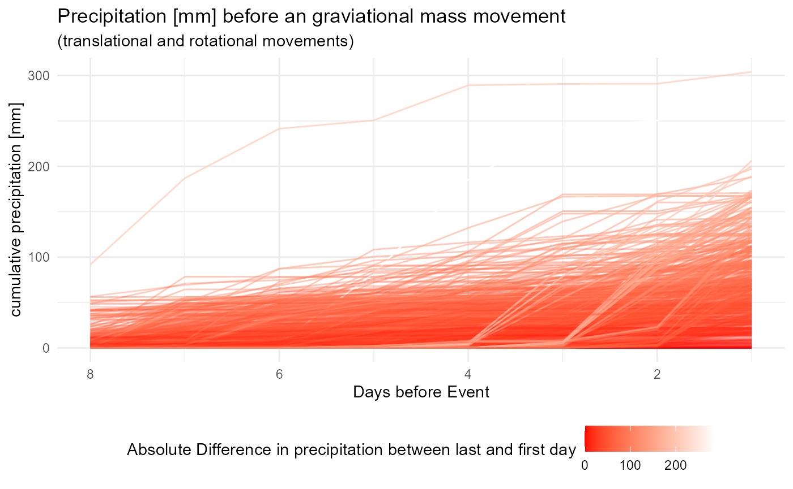

extract_rainfall_landslidePoints.Rmd
# the path to the iffi polygons
landslide_poly_path = "\\\\projectdata.eurac.edu/projects/Proslide/Landslides/Iffi_db_xxxx_to_2018/exportperEurac2020/Shapefiles/IFFI10_5.shp"
# the path to the iffi points
landslide_point_path = "\\\\projectdata.eurac.edu/projects/Proslide/Landslides/Iffi_db_xxxx_to_2018/exportperEurac2020/Shapefiles/IFFI10_1.shp"
# the path to the folder with the iffi-databases
database_dir = "\\\\projectdata.eurac.edu/projects/Proslide/Landslides/Iffi_db_xxxx_to_2018/exportperEurac2020/database"
# the path to the root folder of the gridded rainfall data
path_ncdf = "\\\\projectdata.eurac.edu/projects/Proslide/PREC_GRIDS_updated/"
# load some libraries
library(rainfallR)
library(here)
library(ggrepel)
library(gganimate)
library(RODBC)
library(dplyr)
library(scales)
library(ggplot2)
library(iffitoR) # load some sample landslide data that comes with the package
library(sf)
library(raster)
library(forcats)
library(glue)
library(purrr)
library(stringr)
library(crayon) # for some coloursiffitoR-pacakge which facilitates the access to the iffi database a little bitFirst we will query some more data for the point information in the scarve of the landslides
We can do the procedure here manually or use the landsld-dataset that comes with the iffitoR-package
# only query the data when working under windows due to the RODBC drivers
os = Sys.info()["sysname"]
if (os == "Windows") {
iffi_points = make_shapefile(
database_dir = database_dir,
# normally null only setting it here for me
attribute_database_name = "tbl_frane",
# the name without extension
dictionary_database_name = "diz_frane",
shapefile = landslide_point_path,
# the colums we want to retrieve directly
attri = c("anno_min",
"mese_min",
"giorno_min",
"area"),
# tables to join from the other tables (for more see vignette)
joins = list(
"tbl_frane.Generalita.Cod_tipo" = c(
"diz_frane.diz_tipo_movi.cod_tipo",
"diz_frane.diz_tipo_movi.tipologia"
),
"tbl_frane.clas_ii_liv.movimento" = c(
"diz_frane.diz_movimenti.movimento",
"diz_frane.diz_movimenti.nome_movimento"
),
"tbl_frane.ass_gen_cause.causa" = c(
"diz_frane.diz_cause.causa",
"diz_frane.diz_cause.nome_causa"
)
)
)
}
# what have we got
dplyr::glimpse(iffi_points)the time information is in the columns anno_min, mese_min and giorno_min
the first and second level are still in italian, wo do some more preprocessing
if (os == "Windows") {
# translate the two classifying columns to english
iffi_points_1 = iffitoR::translate_iffi(iffi_points)
# get some more date information
iffi_points_2 = iffitoR::get_date_information(iffi_points_1)
# drop the geometry, so that it gets a little more space
iffi_points_2 %>% st_drop_geometry() %>% dplyr::select(c(matches("date|day|year|month|first|second"))) %>% head()
}We not only want the rainfall at the day of occurrence, but also the 7 days before the actualy event happened
As we have one raster per day and one raster covers the entire province of South Tyrol, we will make a list of all the events that happened on the same day. This will prevent us of extracting the same raster twice.
The names of the list will be the dates. Each day will have a dataframe with one row per event that happened on that day
We can use the function iffi10_same_day for that
# now lets use the data that comes already preprocessed with the iffitoR package
# we need to filter the right slides as we did above for the data queried from the databse
landsld = landsld %>%
filter(str_detect(second_level, "translational|rotational|fast")) %>%
filter(date_info == "day") %>%
filter(year.int >= 1980)
# get all the slides from the same day
slides_same_day = iffi10_same_day(landsld)for each day (each element in the list above) we now extract the rainfall data
therefore we use the rainfallR-package and its simple functions
We essentially extract the right raster from a bunch of NetCDf-files and extract then the raster-value (the rainfall) under the point of consideration
According to the implementation of rainfallR on the days with only one slide we get back a simple dataframe per day (yet in the wrong format that will be re-formatted with the make_cumulative_rainfall-function). When we extract data for more than one slide per day, we also get back a dataframe per say in a little different format and witch a unique identifier per slide
The rainfallR-function was intended to work with multiple days. However, it only supports the extracting of one spatial object (be it multiple points or polygons per day). Here however, we we want to extract the rainfall for various different days for different spatial objects. So we need to write a for loop
This is one (probably not the most effective one) to do in in sequence
# lets only take a smaller subset
slides_same_day = slides_same_day
# for each day get the rainfall at the slide location
out = vector("list", length=length(slides_same_day))
names(out) = names(slides_same_day)
# measure the time
start = Sys.time()
# iterate over the spatial object
for (i in seq_along(slides_same_day)) {
# print some informative message
n = length(slides_same_day)
str = paste0(i, "/", n)
dashes = paste0(replicate(20, "-"), collapse = "")
cat(yellow$bold$underline("\n------------", str, dashes, "\n\n"))
# get the date of the slides
# this is one of the inputs to the function
date = names(slides_same_day)[[i]] %>% as.Date(., "%Y%m%d")
# the spatial object
# another input
spatial.obj = slides_same_day[[i]]
# how many days looking back?
days_back =7
# this returns a list with one element
# if the dts-argument would have more than one data this list would have more arguments
rf = rainfallR::ex_rainfall(
spatial.obj = spatial.obj,
fun = NULL,
date = date,
days_back = days_back
)
out[[i]] = rf
}
res1 = dplyr::bind_rows(out)
end = Sys.time()
took1=end-start
library(foreach)
#> Warning: Paket 'foreach' wurde unter R Version 4.0.3 erstellt
#>
#> Attache Paket: 'foreach'
#> The following objects are masked from 'package:purrr':
#>
#> accumulate, when
library(doParallel)
#> Warning: Paket 'doParallel' wurde unter R Version 4.0.3 erstellt
#> Lade nötiges Paket: iterators
#> Warning: Paket 'iterators' wurde unter R Version 4.0.3 erstellt
#> Lade nötiges Paket: parallel
library(parallel)
# lets only take a smaller subset
slides_same_day = slides_same_day[]
# # for each day get the rainfall at the slide location
# out = vector("list", length=length(slides_same_day))
# names(out) = names(slides_same_day)
# measure the time
start = Sys.time()
registerDoParallel(6)
res = foreach(i = 1:length(slides_same_day),
.combine=rbind,
.packages = c("rainfallR",
"magrittr",
"stringr",
"dplyr")) %dopar%{
# get the date of the slides
# this is one of the inputs to the function
date = names(slides_same_day)[[i]] %>% as.Date(., "%Y%m%d")
# the spatial object
spatial.obj = slides_same_day[[i]]
# some other arguments
days_back =7
# this returns a list with one element
# if the dts-argument would have more than one data this list would have more arguments
rf = rainfallR::ex_rainfall(
spatial.obj = spatial.obj,
fun = NULL,
# as we are using points
date = date,
days_back = days_back
)
}
end = Sys.time()
took2=end-start
gg = ggplot(res) +
geom_path(
mapping = aes(x=days_before_event, cumsum, group=PIFF_ID, col=second_level),
alpha=.5) +
scale_colour_manual(name="Movement type", values = c("black", "purple", "green")) +
guides(colour = guide_legend(override.aes = list(alpha=1))) +
theme_light() +
scale_x_reverse() +
labs(
y = "Cumulative rainfann [mm]",
x = "Days before event",
title = "Amount of antecedent rainfall [mm]"
)
day_for_dir = Sys.Date() %>% str_replace_all(., "-", "")
file = here(paste0("plots/", day_for_dir, "/antecent_rainfall_different_second_level.png"))
# ggsave(filename = file, plot = gg)
l = c("mean_daily_precip" = "Mean Daily Precipiation" , "mean_cumulative_precip" = "Mean Cumulative Precipitation")
res %>%
group_by(second_level, days_before_event) %>%
summarise(mean_daily_precip = mean(precip),
mean_cumulative_precip = mean(cumsum)) %>%
pivot_longer(cols = contains("mean"),
values_to = "value",
names_to = "dimension") %>%
ggplot() +
geom_path(mapping = aes(x = days_before_event, y = value, col = second_level)) +
scale_colour_manual(name = "Type of Movement", values = c("fast flow-type" = "purple", "translational slide" = "black", "rotational slide" = "green")) +
scale_x_reverse() +
facet_wrap(~dimension, labeller = as_labeller(l)) +
theme_light() +
labs(
x = "Days before Event",
y = "Precipitation [mm]"
) +
theme(
strip.text.x = element_text(color="black"),
strip.background = element_rect(fill="white")
)
#> `summarise()` regrouping output by 'second_level' (override with `.groups` argument)
#> Warning in val_cols[col_id] <- unname(as.list(data[cols])): Anzahl der zu
#> ersetzenden Elemente ist kein Vielfaches der Ersetzungslänge
res %>%
group_by(PIFF_ID) %>%
mutate(
diff = last(cumsum) - first(cumsum)
) %>%
ungroup() %>%
mutate(
sd = 2 * sd(diff),
outlier = ifelse(diff > sd, TRUE, FALSE)
) %>%
ggplot() +
geom_path(
mapping = aes(x=days_before_event, y = cumsum, group=PIFF_ID, col = diff,
alpha = diff)
) +
scale_colour_continuous(
name="Absolute Difference in precipitation between last and first day",
low = "white",
high="red") +
guides(alpha = FALSE) +
scale_x_reverse() +
theme_minimal() +
labs(
x = "Days before Event",
y = "cumulative precipitation [mm]",
title = "Precipitation [mm] before a graviational mass movement",
subtitle = "(translational and rotational movements)"
) +
theme(
legend.position = "bottom"
)
# ggsave("../../../presentations/internship_resume/plots/plots/precipitation_all_trans_and_rotational_movements.png", width = 12, height = 8)
res %>%
group_by(PIFF_ID) %>%
mutate(
diff = last(cumsum) - first(cumsum)
) %>%
ungroup() %>%
mutate(
sd = 2 * sd(diff),
outlier = ifelse(diff > sd, TRUE, FALSE)
) %>%
ggplot() +
geom_path(
mapping = aes(x=days_before_event, y = cumsum, group=PIFF_ID, col = diff,
alpha = diff)
) +
scale_colour_continuous(
name="Absolute Difference in precipitation between last and first day",
low = "red",
high="white") +
guides(alpha = FALSE) +
scale_x_reverse() +
theme_minimal() +
labs(
x = "Days before Event",
y = "cumulative precipitation [mm]",
title = "Precipitation [mm] before an graviational mass movement",
subtitle = "(translational and rotational movements)"
) +
theme(
legend.position = "bottom"
) 
# ggsave("../../../presentations/internship_resume/plots/plots/precipitation_all_trans_and_rotational_movements_reverse.png", width = 12, height = 8)
# now lets use the data that comes already preprocessed with the iffitoR package
# we need to filter the right slides as we did above for the data queried from the databse
rm(list = c("landsld"))
landsld = landsld %>%
filter(date_info == "day") %>%
filter(year.int >= 1980)
slides_same_day = list()
for (row in 1:nrow(landsld)) {
# get the day of the event
dts = landsld[row,][["date"]]
dts_chr = as.character(dts) %>% str_replace_all(., "-", "")
# add this spatial object to the list with the name being the day
if(dts_chr %in% names(slides_same_day)){
slides_same_day[[dts_chr]] = rbind(slides_same_day[[dts_chr]], landsld[row,])
} else{
slides_same_day[[dts_chr]] = landsld[row, ]
}
}
# which was the day with the most movements overall
m = sapply(slides_same_day, nrow)
which.max(m)
# for each day get the rainfall at the slide location
# measure the time
start = Sys.time()
registerDoParallel(6)
res = foreach(i = 1:length(slides_same_day),
.combine=rbind,
.packages = c("rainfallR",
"magrittr",
"stringr",
"dplyr")) %dopar%{
# get the date of the slides
# this is one of the inputs to the function
date = names(slides_same_day)[[i]] %>% as.Date(., "%Y%m%d")
# the spatial object
# another input
spatial.obj = slides_same_day[[i]]
# some other arguments
days_back =7
# this returns a list with one element
# if the dts-argument would have more than one data this list would have more arguments
rf = rainfallR::ex_rainfall(
spatial.obj = spatial.obj,
fun = NULL,
date = date,
days_back = days_back
)
}
end = Sys.time()
took3=end-startres %>%
st_drop_geometry() %>%
filter(!is.na(cumsum)) %>%
group_by(PIFF_ID) %>%
mutate(
diff = last(cumsum) - first(cumsum)
) %>%
ungroup() %>%
group_by(second_level) %>%
mutate(n = n(),
second_level = glue("{second_level} ({n / 8} )")) %>%
summarise(mean_diff = mean(diff)) %>%
ungroup() %>%
mutate(
second_level = fct_reorder(second_level, mean_diff)
) %>%
ggplot() +
geom_col(aes(x = mean_diff, y=second_level),
fill="black") +
labs(
x = "Rainfall [mm]",
y = "",
title = "Mean cumulative rainfall in the 7 days before the movement",
subtitle = "classified in the second level (# of events)"
) +
theme_minimal()
# ggsave("../../../presentations/internship_resume/plots/plots/rainfall_second_level_seven_days_before_movement.png", width = 12,
height=8)